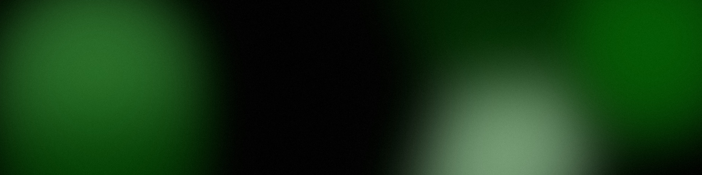

Brand · Who we are
The brand
Who khyzr is. The name and what it carries, why we exist, the three pillars, the personality, and the tagline.

The name.

الخضر
Al-Khidr, "the Green One"
Al-Khidr, "the Green One": الخضر
The name carries three meanings the brand is built to honor: growth, health, wealth. This is why khyzr is green, and only ever green.
- One name moment per surface: the Arabic name appears once, and only in that moment.
- Never as decoration, never sprinkled through copy.
- How the name is written in copy is on the Voice page.
The name, in lowercase
- The brand is "khyzr", always lowercase. Never "Khyzr", never "khyzr Consulting Group."
Why we exist.
- Vision. Every client we've ever served is still working with us, because the relationship kept compounding.
- Mission. Take on the whole board for leaders whose problems don't fit one lane, and see it through alongside their teams.
The purpose
- Purpose. To make businesses whole: growth, health, and wealth for the companies we serve and the communities they touch.
Three pillars.
Reach
It’s not any problem. It’s every problem.
Moral Mantra
Ethics. Empathy. Integrity.
Togetherness
We blend in. We don’t take over.
- Reach. "It's not any problem. It's every problem." Every discipline, one team; passion is the engine.
- Moral Mantra. "Ethics. Empathy. Integrity."
- Togetherness. "We blend in. We don't take over."
Moral Mantra, in one line
- The glue of the culture and the compass, carried into other teams to uplift the people and the community.
Togetherness, in one line
- Embedded and long-run, alongside the client's teams, not just for the C-suite.
The personality.
Approachable. Transparent. Dependable.
The brand looks enterprise-formal; the person you meet in the writing is human. How that sounds, rule by rule, is on the Voice page.
The tagline.

Strive Forward. Thrive Together.
Strive Forward. Thrive Together.
Strive Forward is the solution that adapts, extends, and heals; Thrive Together is the embedded, long-run way of working.
- "Strive Forward. Thrive Together.", the carried verbal asset, closes and signs the © line.
- "Everything starts here." is the house's second line: it opens, it is never called a tagline, and it never sits beside the tagline.
- Don't coin new taglines per page.
How the tagline is set
- It keeps its own casing wherever it is set: each word capitalized, two periods.
- It is set whole. Neither half stands alone.
- It expresses the brand. It is not the message a piece of work carries.
The house.
A product is named khyzr.[x] and carries the masterbrand. No new brand names. How khyzr, khyzr.ai, and khyzr.studio stand together is on The house page.
The boilerplate.
khyzr in 25, 50, and 100 words. Use the shortest one that fits. Never trim one by hand; take the next length down.
25 words
khyzr is one team for leaders whose problems don't fit one lane. We take on the whole board and see it through alongside your team.
50 words
khyzr is one team for leaders whose problems don't fit one lane. We cover strategy, sales and marketing, operations, finance, healthcare, and technology, so we can take on the whole board and see it through alongside your team. We exist to make businesses whole: growth, health, and wealth.
100 words
khyzr is one team for leaders whose problems don't fit one lane. We cover strategy, sales and marketing, operations, finance, healthcare, and technology, so we can take on the whole board and see it through alongside your team. We blend in. We don't take over. We tell you what we see, not what you want to hear. The name comes from Al-Khidr, "the Green One," and carries three meanings: growth, health, and wealth. That is what we work toward for the companies we serve and the communities they touch. Two products carry the name: khyzr.ai and khyzr.studio. Strive Forward. Thrive Together.